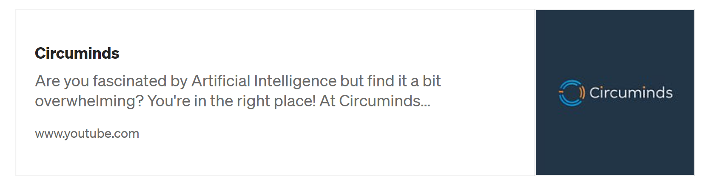
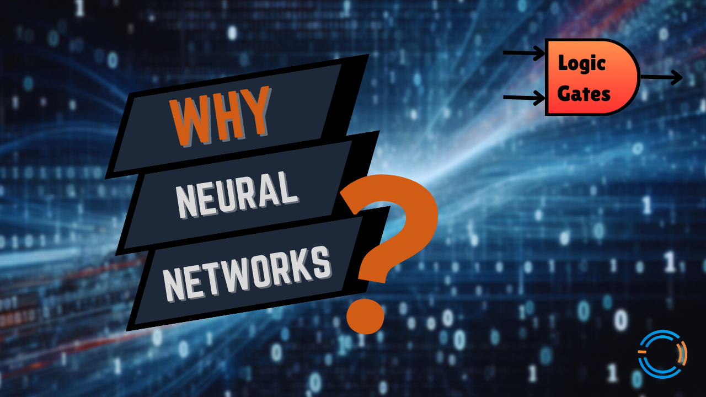
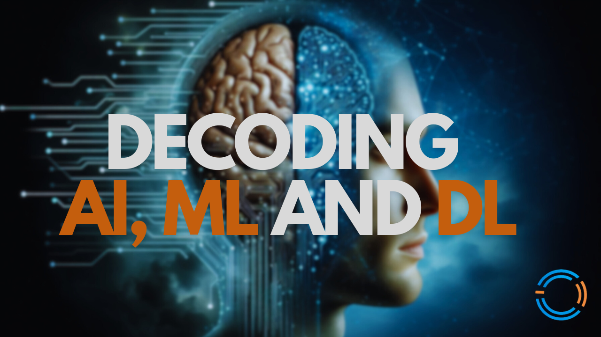
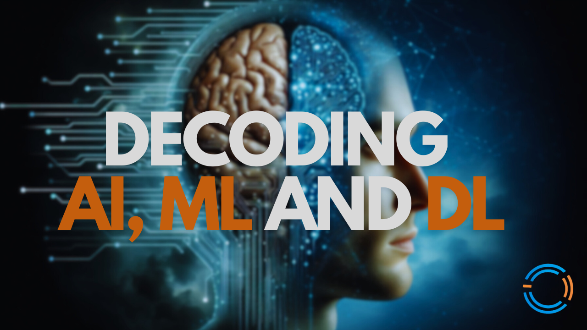
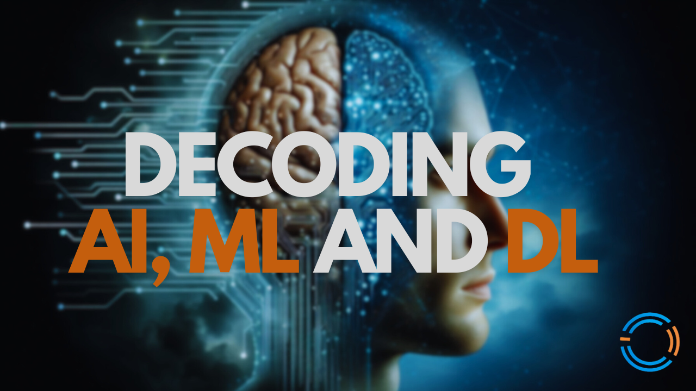

At Circuminds, I break down complex AI topics into simple, easy-to-understand explanations for everyone, no matter your technical background. AI is everywhere in our daily lives these days, from personalized recommendations, smart devices to driverless cars, yet many people don't realize how it works behind the scenes. I believe that everyone should have a basic understanding of how AI technology works and how it’s making our lives easier, which is why I’m sharing these insights on YouTube while continuously learning about new technologies myself!"
Most viewed videos:

 


Explore all videos: Circuminds videos
In addition to my videos, I share occasional blogs on Medium. Have a look here: Medium blogs